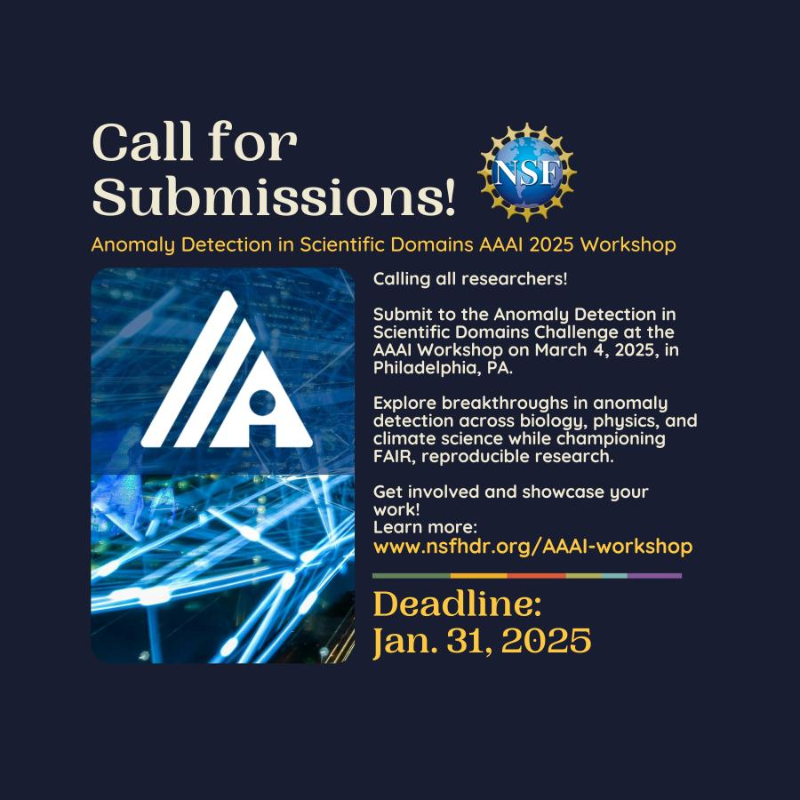

Calling all researchers!
Submit to the Anomaly Detection in Scientific Domains Challenge at the AAAI Workshop on March 4, 2025, in Philadelphia, PA.
Challenge deadline: Jan. 31, 2025
Explore breakthroughs in anomaly detection across biology, physics, and climate science while championing FAIR, reproducible research.
Get involved and showcase your work!
Learn how to submit at this link